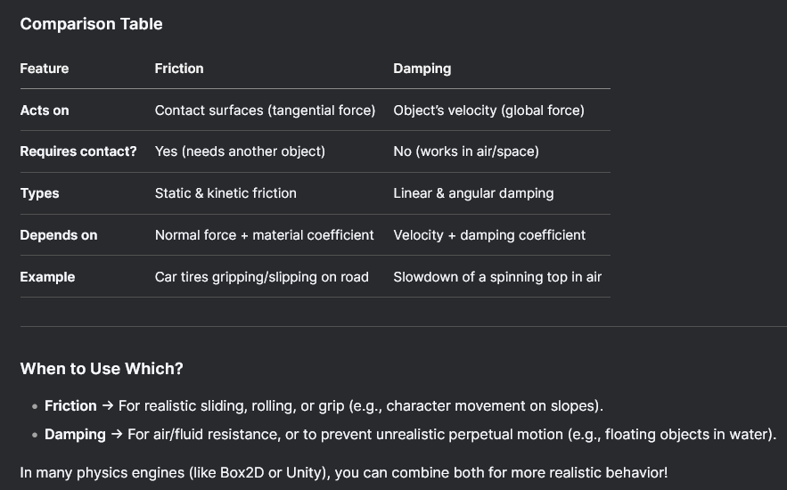

Physics Engines - JoltPhysics
About
-
Open-source, MIT.
-
Pros :
-
3D-Capable: Designed for 3D but can be used in 2D (lock Z-axis). Easier transition later.
-
High Performance: Multithreaded (job system) and SIMD-optimized for scalability.
-
Modern Design: Written in C++17, focused on large worlds and complex collisions.
-
Ragdoll/Bone Support: Built-in support for articulated bodies (useful for procedural animation).
-
Used in AAA Games: Horizon Forbidden West used Jolt’s predecessor (Jolt is its open-source successor).
-
-
Cons :
-
Steeper Learning Curve: Fewer 2D-specific tutorials compared to Box2D.
-
Heavier for 2D: Overkill if you’re only doing simple 2D games.
-
Less "Batteries-Included": You’ll need to handle 2D abstractions yourself.
-
-
Can Jolt be used as a physics engine for a 2D game in raylib?
-
Technically, yes, but with caveats:
-
Jolt Physics is a 3D physics engine, primarily designed for rigid body simulations in 3D space.
-
raylib is a 2D/3D graphics library, often used for 2D games.
-
While you can use Jolt in a 2D context by constraining movement to a plane (e.g., X/Y and freezing Z), this requires:
-
Manually restricting all bodies and forces to a 2D plane.
-
Filtering collisions and constraints accordingly.
-
No native 2D API or optimizations.
-
-
-
-
Should Jolt be used for a 2D game in raylib?
-
Advantages :
-
High-performance and modern physics engine.
-
Features like multithreading, deterministic simulation, and fine control over physics behavior.
-
Good if you expect to migrate to 3D later or need advanced features.
-
-
Disadvantages :
-
Not designed for 2D: No 2D-specific APIs, optimizations, or collision shapes.
-
Increased complexity: Requires workarounds to force 2D behavior.
-
Memory and performance overhead for unused 3D capabilities.
-
Alternative 2D engines exist that integrate more naturally with raylib.
-
-
-
Determinism :
-
"The simulation runs deterministically. You can replicate a simulation to a remote client by merely replicating the inputs to the simulation. Read the Deterministic Simulation section to understand the limits."
-
Jolt for 2D
Beam
-
Early stage.
-
Type: C#
-
Inspiration: Jolt’s job system, but for .NET.
-
Why Watch It?
-
Could become a C# alternative to Jolt.
-
Explanations
Body Type
Rigid
-
.
Soft
-
.
Motion Types
Static
-
Non-movable.
Dynamic
-
Responds to forces like a normal physics object.
Kinematic
-
Movable using velocities only. Does not respond to forces.
-
Kinematic objects are not affected by other kinematic/static objects.
-
I believe this is standard because Kinematic Bodies have infinite mass, which makes interaction with other Kinematic and Static bodies tricky.
-
-
Note:
-
From my understanding, Kinematic bodies can only interact with other Kinematic or Static Bodies through the Character/CharacterVirtual class.
-
I'm not familiar with Kinematic bodies yet.
-
I recommend looking into the Samples from JoltPhysics in C++; there are some examples of using Kinematic Bodies and Character/CharacterVirtual.
-
-
The physics engine will never change the velocity of a kinematic body; you need to do this yourself. If you stop calling
MoveKinematicthe body will continue moving at the same speed forever. If you want the body to stop after arriving then callBodyInterface::SetLinearAndAngularVelocity(body_id, Vec3:sZero(), Vec3:sZero()). -
Samples/General/Kinematic.
-
I experimented changing the 'wall boxes' from
EMotionType::DynamictoEMotionType::Static, and the spheres just pass through the boxes without interacting.
-
-
Samples/Rig/KinematicRig.
-
I experimented changing the 'wall boxes' from
EMotionType::DynamictoEMotionType::Static, and the rig just passes through the boxes without interacting.
-
-
Samples/Character.
-
Samples/CharacterVirtual.
Change Motion Type
-
Samples/General/Change Motion Type.
// Create body as static, but allow to become dynamic
BodyCreationSettings settings;
settings.SetShape(new BoxShape(Vec3(0.5f, 1.0f, 2.0f)));
settings.mPosition = RVec3(0, 10, 0);
settings.mMotionType = EMotionType::Static;
settings.mObjectLayer = Layers::MOVING; // Put in moving layer, this will result in some overhead when the body is static
settings.mAllowDynamicOrKinematic = true;
mBody = mBodyInterface->CreateBody(settings);
mBodyInterface->AddBody(mBody->GetID(), EActivation::Activate);
// .. toggling later
mBodyInterface->SetMotionType(mBody->GetID(), motion_type, EActivation::Activate);
// -> Before Update
// Provide kinematic body a target
if (mBody->IsKinematic())
mBody->MoveKinematic(RVec3(Sin(mTime), 10, 0), Quat::sRotation(Vec3::sAxisX(), Cos(mTime)), inParams.mDeltaTime);
Activation
Sleep
-
"Active and Deactive is just sleep. The body continues to register contacts normally. It is not ignored by the physics system."
-
A physics_system can be configured to have a smaller sleep time, or to be configured so that no body will go to sleep.
-
An individual body can also be configured to not be allowed to sleep via
allowsleeping. -
Sensors can't go to sleep, no matter what.
Dynamic
-
If not a sensor:
-
If activated and stopped, it will become deactivated after 0.5s (default defined in the physics system).
-
-
If deactivated and receives a collision, it will activate.
-
A deactivated body is not moved by velocities during update; it stays still.
-
It is still considered for contact detection, but it is not moved on its own.
-
Static
-
When calling
BodyInterface_AddBody, it doesn't matter if defined as.Activateor.Dont_Activate, the body will be created as.Dont_Activate. -
A static body cannot be activated, even when using the body_interface after it has already been created.
Shapes
Edges
-
Without Meshes :
-
Samples/General/Enhanced Internal Edge Removal.
// A sphere BodyCreationSettings sphere_bcs(new SphereShape(2.0f), pos, Quat::sIdentity(), EMotionType::Dynamic, Layers::MOVING); sphere_bcs.mLinearVelocity = Vec3(20, 0, 0); sphere_bcs.mEnhancedInternalEdgeRemoval = enhanced_removal == 1; id = mBodyInterface->CreateAndAddBody(sphere_bcs, EActivation::Activate); SetBodyLabel(id, labels[enhanced_removal]); pos += RVec3(0, 0, 5.0_r); -
-
With Meshes :
-
mesh_shape.mActiveEdgeCosThresholdAngle. -
mesh_settings.mEnhancedInternalEdgeRemoval = true.
-
Samples/General/Active Edges.
// Settings for all frictionless boxes. Ref<BoxShape> box_shape = new BoxShape(Vec3(1.0f, 1.0f, 1.0f), cDefaultConvexRadius); BodyCreationSettings box_settings(box_shape, RVec3::sZero(), Quat::sIdentity(), EMotionType::Dynamic, Layers::MOVING); box_settings.mFriction = 0.0f; box_settings.mLinearDamping = 0.0f; box_settings.mAllowSleeping = false; // Mesh shape MeshShapeSettings mesh_shape(triangles); mesh_shape.SetEmbedded(); mesh_shape.mActiveEdgeCosThresholdAngle = Cos(DegreesToRadians(50.0f)); // Mesh BodyCreationSettings mesh_settings(&mesh_shape, RVec3::sZero(), Quat::sIdentity(), EMotionType::Static, Layers::NON_MOVING); // Instead of setting mesh_shape.mActiveEdgeCosThresholdAngle you can also set: mesh_settings.mEnhancedInternalEdgeRemoval = true. mesh_settings.mFriction = 0.0f; mBodyInterface->CreateAndAddBody(mesh_settings, EActivation::DontActivate);-
Samples/General/Enhanced Internal Edge Removal.
// Turn off regular active edge determination so that we only rely on the mEnhancedInternalEdgeRemoval flag mesh_settings.mActiveEdgeCosThresholdAngle = -1.0f; // In the "Samples/General/Active Edges" example this is not used. -
SimShapeFilter
-
Set/get the shape filter that will be used during simulation. This can be used to exclude shapes within a body from colliding with each other.
-
The PhysicsSystem does not own the ShapeFilter, make sure it stays alive during the lifetime of the PhysicsSystem.
-
Ex :
-
If you have a high detail and a low detail collision model, you can attach them to the same body in a StaticCompoundShape and use the ShapeFilter to exclude the high detail collision model when simulating and exclude the low detail collision model when casting rays. Note that in this case you would need to pass the inverse of inShapeFilter to the CastRay function. Pass a nullptr to disable the shape filter.
-
SetSimShapeFilter;
GetSimShapeFilter;
-
Samples/General/Shape Filter (Collision Detection).
CompoundShape
// Compound shape
Ref<Shape> capsule = new CapsuleShape(2, 0.1f);
capsule->SetUserData(1); // Don't want the capsule to collide with the platform
Ref<Shape> sphere = new SphereShape(0.5f);
sphere->SetUserData(1); // Don't want the sphere to collide with the platform
Ref<Shape> box = new BoxShape(Vec3::sReplicate(0.5f));
Ref<StaticCompoundShapeSettings> compound = new StaticCompoundShapeSettings;
compound->AddShape(Vec3::sZero(), Quat::sIdentity(), capsule);
compound->AddShape(Vec3(0, -2, 0), Quat::sIdentity(), sphere);
compound->AddShape(Vec3(0, 2, 0), Quat::sIdentity(), box);
// Create compound
BodyCreationSettings compound_body(compound, RVec3(0, 15, 0), Quat::sIdentity(), EMotionType::Dynamic, Layers::MOVING);
mShapeFilter.mCompoundID[0] = mBodyInterface->CreateAndAddBody(compound_body, EActivation::Activate);
Meshes
-
.
Changing Shapes
-
Samples/General/Change Shape.
-
Nothing special, just
mBodyInterface->SetShape(mBodyID, mShapes[mShapeIdx], true, EActivation::Activate);
-
Sensors
-
The cheapest sensor has a Static motion type. This type of sensor will only detect active bodies entering its area. As soon as a body goes to sleep, the contact will be lost. Note that you can still move a Static sensor around using
BodyInterface::SetPosition. -
When you make a sensor Kinematic or Dynamic and activate it, it will also detect collisions with sleeping bodies, albeit with a higher run-time cost.
About
-
A collision shape that detects overlaps/contacts but doesn’t generate physical responses.
-
Use Cases:
-
Detecting when a player enters a zone.
-
Custom logic for proximity (e.g., AI awareness).
-
-
No friction/restitution applied.
-
Also called a trigger (e.g., in Unity).
-
Overlaps trigger callbacks (e.g.,
OnTriggerEnterin Unity). -
Exs :
-
A pressure plate in a game that triggers a door opening.
-
How to use
-
To detect collisions, it is normally used from a ContactListener; it is vital to obtain callbacks.
Example
-
Samples/General/Sensor.
// A static sensor that attracts dynamic bodies that enter its area
BodyCreationSettings sensor_settings(new SphereShape(10.0f), RVec3(0, 10, 0), Quat::sIdentity(), EMotionType::Static, Layers::SENSOR);
sensor_settings.mIsSensor = true;
mSensorID[StaticAttractor] = mBodyInterface->CreateAndAddBody(sensor_settings, EActivation::DontActivate);
// A static sensor that only detects active bodies
BodyCreationSettings sensor_settings(new BoxShape(Vec3::sReplicate(5.0f)), RVec3(-10, 5.1f, 0), Quat::sIdentity(), EMotionType::Static, Layers::SENSOR);
sensor_settings.mIsSensor = true;
mSensorID[StaticSensor] = mBodyInterface->CreateAndAddBody(sensor_settings, EActivation::DontActivate);
// A kinematic sensor that also detects sleeping bodies
BodyCreationSettings sensor_settings(new BoxShape(Vec3::sReplicate(5.0f)), RVec3(10, 5.1f, 0), Quat::sIdentity(), EMotionType::Kinematic, Layers::SENSOR);
sensor_settings.mIsSensor = true;
mSensorID[KinematicSensor] = mBodyInterface->CreateAndAddBody(sensor_settings, EActivation::Activate);
SetBodyLabel(mSensorID[KinematicSensor], "Kinematic sensor that also detects sleeping bodies");
// A kinematic sensor that also detects static bodies
BodyCreationSettings sensor_settings(new BoxShape(Vec3::sReplicate(5.0f)), RVec3(25, 5.1f, 0), Quat::sIdentity(), EMotionType::Kinematic, Layers::MOVING);
// Put in a layer that collides with static
sensor_settings.mIsSensor = true;
sensor_settings.mCollideKinematicVsNonDynamic = true;
mSensorID[SensorDetectingStatic] = mBodyInterface->CreateAndAddBody(sensor_settings, EActivation::Activate);
// -> Before Update
// Apply forces to dynamic bodies in StaticAttractor sensor.
lock_guard lock(mMutex);
RVec3 center(0, 10, 0);
float centrifugal_force = 10.0f;
Vec3 gravity = mPhysicsSystem->GetGravity();
for (const BodyAndCount &body_and_count : mBodiesInSensor[StaticAttractor])
{
BodyLockWrite body_lock(mPhysicsSystem->GetBodyLockInterface(), body_and_count.mBodyID);
if (body_lock.Succeeded())
{
Body &body = body_lock.GetBody();
if (body.IsKinematic())
continue;
// Calculate centrifugal acceleration
Vec3 acceleration = Vec3(center - body.GetPosition());
float length = acceleration.Length();
if (length > 0.0f)
acceleration *= centrifugal_force / length;
else
acceleration = Vec3::sZero();
// Draw acceleration
mDebugRenderer->DrawArrow(body.GetPosition(), body.GetPosition() + acceleration, Color::sGreen, 0.1f);
// Cancel gravity
acceleration -= gravity;
// Apply as force
body.AddForce(acceleration / body.GetMotionProperties()->GetInverseMass());
}
}
// -> Callbacks
// See the callbacks in the file; they are important.
void SensorTest::OnContactAdded(...) {
}
/*
OnContactRemoved:
*/
Contact Manifold
Contact Manifold
-
The set of data describing the contact points between two colliding objects.
-
Used by the solver to compute collision responses (e.g., pushing objects apart).
-
In Physics Engines, stores:
-
Contact points (positions where objects touch).
-
Contact normals (direction to resolve collisions).
-
Penetration depth (how much objects overlap).
-
-
Types:
-
Persistent Manifold: Reused across frames for efficiency (e.g., in Bullet/Box2D).
-
Discrete Manifold: Generated per collision (simpler cases).
-
-
Exs :
-
A box resting on the ground has a manifold with 1–4 contact points (depending on engine optimizations).
-
-
Samples/General/Contact Manifold
-
The example has nothing special, it just spawns objects at an angle to demonstrate contacts.
-
Collisions
Ghost Collisions
-
[2025/06/22]
-
I had a problem with Ghost Collisions when loading tons of Boxes from LDtk.
-
*Without
StaticCompoundShape:-
Using
BodyCreationSettings_SetEnhancedInternalEdgeRemovalfor the protagonist did not help. -
Using a
CapsuleShapeinstead of aBoxShapedid not help. -
Changing the
ConvexRadiusparameters of theBoxShapedid not help.
-
-
This was solved via
StaticCompoundShape, joining all the Boxes into a single body.-
I also used
BodyCreationSettings_SetEnhancedInternalEdgeRemovalfor the protagonist; I did not use it for theCompoundShape.
-
-
Other possible ideas were:
-
HeightFieldShape.
-
Use of Meshes.
-
-
-
Samples/General/Conveyor Belt.
-
~I think it acts on the collided body manually after the contact is registered.
-
Physics Properties
Gravity Factor
-
Samples/General/Gravity Factor.
Body &body = *mBodyInterface->CreateBody(BodyCreationSettings(box, RVec3(-50.0f + i * 10.0f, 25.0f, 0), Quat::sIdentity(), EMotionType::Dynamic, Layers::MOVING));
body.GetMotionProperties()->SetGravityFactor(0.1f * i);
mBodyInterface->AddBody(body.GetID(), EActivation::Activate);
Inverse Mass
-
Inverse mass ($\frac{1}{m}$) is a computational optimization and mathematical trick used in physics engines to simplify calculations, particularly in constraint solving and collision response.
-
Multiplying is faster than dividing.
-
-
For dynamic objects:
-
Mass = $m$ → Inverse mass = $\frac{1}{m}$ (a finite, positive value).
-
-
For static/immovable objects:
-
Mass = $∞$ → Inverse mass = $0$ (avoids division-by-infinity issues).
-
Friction
-
A force that opposes the relative motion between two surfaces in contact.
-
Opposes relative motion between two surfaces in contact.
-
Acts tangentially (parallel to the contact surface).
-
Friction requires contact and only acts when objects are touching.
-
Types :
-
Static friction: Prevents an object from moving when at rest (must be overcome to start sliding).
-
Dynamic (kinetic) friction: Slows down an object already in motion.
-
-
Depends on :
-
The friction coefficient (a material property, e.g., rubber vs. ice).
-
The normal force (how hard the surfaces are pressed together).
-
-
Exs :
-
A box sliding on a rough floor slows down due to friction.
-
-
 .
-
Samples/General/Friction.
// Floor
Body &floor = *mBodyInterface->CreateBody(
BodyCreationSettings(new BoxShape(Vec3(100.0f, 1.0f, 100.0f), 0.0f), RVec3::sZero(), Quat::sRotation(Vec3::sAxisX(), 0.25f * JPH_PI), EMotionType::Static, Layers::NON_MOVING)
);
floor.SetFriction(1.0f);
mBodyInterface->AddBody(floor.GetID(), EActivation::DontActivate);
// Box
Body &body = *mBodyInterface->CreateBody(
BodyCreationSettings(box, RVec3(-50.0f + i * 10.0f, 55.0f, -50.0f), Quat::sRotation(Vec3::sAxisX(), 0.25f * JPH_PI), EMotionType::Dynamic, Layers::MOVING)
);
body.SetFriction(0.1f * i);
mBodyInterface->AddBody(body.GetID(), EActivation::Activate);
Damping
-
A force that gradually reduces velocity over time (simulates drag/resistance).
-
Acts like "drag" or "viscous resistance," slowing down an object proportionally to its velocity.
-
Applies globally (even without contact with other objects).
-
Prevents objects from moving indefinitely and stabilizes simulations.
-
Damping works without contact and is like an "invisible force" slowing things down.
-
Types :
-
Linear damping: Slows down straight-line movement (translation).
-
Angular damping: Slows down rotation.
-
-
Depends on :
-
A damping coefficient (set per object, often between
0and1). -
The object’s current velocity (higher velocity → stronger damping).
-
-
Exs :
-
A swinging pendulum gradually stops due to air resistance (modeled as damping).
-
-
Samples/General/Damping.
// Floor
CreateFloor();
// Box
Body &body = *mBodyInterface->CreateBody(BodyCreationSettings(sphere, RVec3(-50.0f + i * 10.0f, 2.0f, -80.0f), Quat::sIdentity(), EMotionType::Dynamic, Layers::MOVING));
body.GetMotionProperties()->SetAngularDamping(0.0f);
body.GetMotionProperties()->SetLinearDamping(0.1f * i);
body.SetLinearVelocity(Vec3(0, 0, 10));
mBodyInterface->AddBody(body.GetID(), EActivation::Activate);
Restitution
-
A measure of how "bouncy" a collision is (elasticity).
-
Samples/General/Restitution.
// Floor
CreateFloor();
// Box
BodyCreationSettings settings(sphere, RVec3(-50.0f + i * 10.0f, 20.0f, -20.0f), Quat::sIdentity(), EMotionType::Dynamic, Layers::MOVING);
settings.mRestitution = 0.1f * i;
settings.mLinearDamping = 0.0f;
BodyID id = mBodyInterface->CreateAndAddBody(settings, EActivation::Activate);
Constraints
Priority
-
'Samples/Constraint/Constraint Priority' explains this very well.
Fixed Constraint
-
DOFs :
-
Rotation: 0 DOF
-
Translation: 0 DOF
-
-
Use Case :
-
Welding two bodies together
-
Attaching parts that should move as one unit
-
-
See the problem of "I want areas to follow bodies, for Hitboxes and Hurtboxes".
// Create
fixed_constraint_settings: jolt.Fixed_Constraint_Settings
jolt.FixedConstraintSettings_Init(&fixed_constraint_settings)
fixed_constraint_settings.auto_detect_point = true
area.constraint = jolt.FixedConstraint_Create(&fixed_constraint_settings, body_to_fixate, area.body)
jolt.PhysicsSystem_AddConstraint(physics_system, area.constraint)
// Destroy
jolt.PhysicsSystem_RemoveConstraint(physics_system, area.constraint)
jolt.Constraint_Destroy(area.constraint)
DOFs (Degrees Of Freedom)
-
Samples/General/2D funnel.
BodyCreationSettings bcs(shapes[0], RVec3::sZero(), Quat::sIdentity(), EMotionType::Dynamic, Layers::MOVING);
bcs.mAllowedDOFs = EAllowedDOFs::Plane2D;
Point Constraint
-
Full rotational freedom.
-
DOFs :
-
Rotation: 3 DOFs
-
Translation: 0 DOF
-
-
Use Case :
-
Shoulder joints
-
General-purpose free rotation where only positional constraint is needed.
-
Hinge Constraint
-
Rotation only around a single axis.
-
DOFs :
-
Rotation: 1 DOF (around the hinge axis).
-
Translation: 0 DOFs.
-
-
Use Case :
-
Elbows, knees
-
Wheels, doors
-
-
What distinguishes a soft hinge from a hard hinge is the use of spring configuration. A soft hinge uses springs:
hinge.mLimitsSpringSettings.mFrequency = 1.0f; hinge.mLimitsSpringSettings.mDamping = 0.5f; -
[2025/07/19] What I used for hinge tests :
-
Important notes :
-
I felt instability in the character's movement while a hinge was attached to the character.
-
It's easy to assume the swing of the
second_bodycaused thedynamic_bodyof the character to sway by inertia. -
Removing the system solved the problem.
-
-
// -> In Character_User second_body: eng.Dynamic_Body, hinge: ^jolt.Hinge_Constraint, // -> At spawn eng.dynamic_body_create( dynamic_body = &personagem.second_body, shape = jolt.SphereShape_Create(eng.from_world_to_physics_space(3)), pos = {}, layers = u32(Object_Layer.Dynamic_Body), child_transform = nil, can_rotate = true, ) hinge_settings: jolt.Hinge_Constraint_Settings jolt.HingeConstraintSettings_Init(&hinge_settings) hinge_settings.space = .Local_To_Body_COM hinge_settings.point1 = { 0, 0, 0 } hinge_settings.point2 = { 1, 0, 0 } hinge_settings.hinge_axis1 = { 0, 0, 1 } hinge_settings.hinge_axis2 = { 0, 0, 1 } hinge_settings.normal_axis1 = { 1, 0, 0 } hinge_settings.normal_axis2 = { 0, 1, 0 } hinge_settings.limits_max = 0 * rl.DEG2RAD hinge_settings.limits_min = -90 * rl.DEG2RAD personagem.hinge = jolt.HingeConstraint_Create(&hinge_settings, personagem.dynamic_body, personagem.second_body) // personagem.hinge = jolt.HingeConstraint_Create(&hinge_settings, personagem.second_body, personagem.dynamic_body) jolt.PhysicsSystem_AddConstraint(eng.physics_system, personagem.hinge) -
Cone Constraint
-
Allows swing within a cone and optional twist around the axis.
-
DOFs :
-
Swing: 2 DOF (inside a cone)
-
Twist: 1 DOF (about the constraint axis; often limited)
-
-
Use Case :
-
Shoulder joints with realistic swing and twist
-
Ragdoll simulation (e.g., upper arms, hips)
-
Skeleton & Ragdoll
-
Samples/Rig/CreateRigTest.cpp | Samples/Utils/RagdollLoader.cpp
-
Contain only a helper to create a ragdoll manually, as shown in 'Samples/Utils/RagdollLoader.cpp'.
// Create skeleton Ref<Skeleton> skeleton = new Skeleton; uint lower_body = skeleton->AddJoint("LowerBody"); uint mid_body = skeleton->AddJoint("MidBody", lower_body); uint upper_body = skeleton->AddJoint("UpperBody", mid_body); /*uint head =*/ skeleton->AddJoint("Head", upper_body); uint upper_arm_l = skeleton->AddJoint("UpperArmL", upper_body); uint upper_arm_r = skeleton->AddJoint("UpperArmR", upper_body); /*uint lower_arm_l =*/ skeleton->AddJoint("LowerArmL", upper_arm_l); /*uint lower_arm_r =*/ skeleton->AddJoint("LowerArmR", upper_arm_r); uint upper_leg_l = skeleton->AddJoint("UpperLegL", lower_body); uint upper_leg_r = skeleton->AddJoint("UpperLegR", lower_body); /*uint lower_leg_l =*/ skeleton->AddJoint("LowerLegL", upper_leg_l); /*uint lower_leg_r =*/ skeleton->AddJoint("LowerLegR", upper_leg_r); // .. // Create arrays of shapes, positions, rotations, constraint positions, twist axis, twist angle, normal angle, plane angle. // .. // Create ragdoll settings RagdollSettings *settings = new RagdollSettings; settings->mSkeleton = skeleton; settings->mParts.resize(skeleton->GetJointCount()); for (int p = 0; p < skeleton->GetJointCount(); ++p) { RagdollSettings::Part &part = settings->mParts[p]; part.SetShape(shapes[p]); part.mPosition = positions[p]; part.mRotation = rotations[p]; part.mMotionType = EMotionType::Dynamic; part.mObjectLayer = Layers::MOVING; // First part is the root, doesn't have a parent and doesn't have a constraint if (p > 0) { SwingTwistConstraintSettings *constraint = new SwingTwistConstraintSettings; constraint->mDrawConstraintSize = 0.1f; constraint->mPosition1 = constraint->mPosition2 = constraint_positions[p]; constraint->mTwistAxis1 = constraint->mTwistAxis2 = twist_axis[p]; constraint->mPlaneAxis1 = constraint->mPlaneAxis2 = Vec3::sAxisZ(); constraint->mTwistMinAngle = -DegreesToRadians(twist_angle[p]); constraint->mTwistMaxAngle = DegreesToRadians(twist_angle[p]); constraint->mNormalHalfConeAngle = DegreesToRadians(normal_angle[p]); constraint->mPlaneHalfConeAngle = DegreesToRadians(plane_angle[p]); part.mToParent = constraint; } } // Optional: Stabilize the inertia of the limbs settings->Stabilize(); // Disable parent child collisions so that we don't get collisions between constrained bodies settings->DisableParentChildCollisions(); // Calculate the map needed for GetBodyIndexToConstraintIndex() settings->CalculateBodyIndexToConstraintIndex(); -
-
Samples/Rig/LoadRigTest.cpp | Samples/Utils/RagdollLoader.cpp
-
Code to load a
Human.tof. -
The load code is in 'Samples/Utils/RagdollLoader.cpp'.
-
As I understand it, the file is read, marshalled, and then the constraints are created manually based on features contained in the read file.
-
The creation of the rig / skeleton appears to be done automatically when passing a pointer to a
ragdoll_settings; only constraints are not created automatically. -
The load function belongs to
ObjectStream.-
ObjectStreamIn contains all logic for reading an object from disk. It is the base class for the text and binary input streams (ObjectStreamTextIn and ObjectStreamBinaryIn).
-
-
-
Samples/Rig/KinematicRigTest.cpp.
-
Two interesting things:
-
The rig is kinematic, so it can interact with Dynamic Bodies but not with Static Bodies.
-
An animation is applied to the Rig.
-
// -> On init, after creating the ragdoll: mPose.SetSkeleton(mRagdollSettings->GetSkeleton()); // Position ragdoll mAnimation->Sample(0.0f, mPose); mPose.CalculateJointMatrices(); mRagdoll->SetPose(mPose); // -> On pre_physics_update: // Sample previous pose and draw it (ragdoll should have achieved this position) mAnimation->Sample(mTime, mPose); mPose.CalculateJointMatrices(); // Update time mTime += inParams.mDeltaTime; // Sample new pose mAnimation->Sample(mTime, mPose); mPose.CalculateJointMatrices(); mRagdoll->DriveToPoseUsingKinematics(mPose, inParams.mDeltaTime); -
-
Samples/Rig/PoweredRigTest.cpp
-
Basically the same as 'Samples/Rig/KinematicRigTest.cpp', but it changes how pre_update is done:
// -> On init, after creating the ragdoll: mPose.SetSkeleton(mRagdollSettings->GetSkeleton()); // Position ragdoll mAnimation->Sample(0.0f, mPose); mPose.CalculateJointMatrices(); mRagdoll->SetPose(mPose); // -> On pre_physics_update: // Update time mTime += inParams.mDeltaTime; // Sample new pose mAnimation->Sample(mTime, mPose); // Place the root joint on the first body so that we draw the pose in the right place RVec3 root_offset; SkeletonPose::JointState &joint = mPose.GetJoint(0); joint.mTranslation = Vec3::sZero(); // All the translation goes into the root offset mRagdoll->GetRootTransform(root_offset, joint.mRotation); mPose.SetRootOffset(root_offset); mPose.CalculateJointMatrices(); mRagdoll->DriveToPoseUsingMotors(mPose); -
-
Samples/Rig/LoadSaveRigTest.cpp.
-
Same as 'LoadRigTest', but changes are saved via
ObjectStreamOut:sWriteObject(data, ObjectStream:EStreamType:Text, *settings).
-
-
Samples/Rig/LoadSaveBinaryRigTest.cpp.
-
Same as 'LoadRigTest', but changes are saved via
mSkeleton->SaveBinaryState(inStream).
-